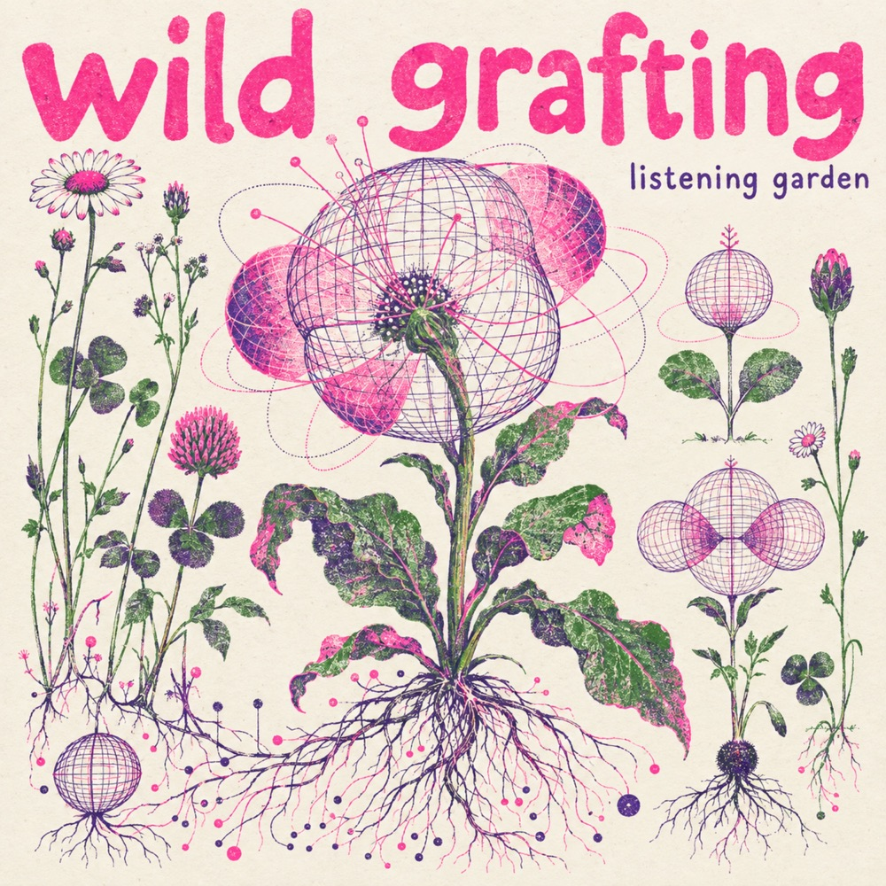

ALBUM RELEASE / BANDCAMP
Wild Grafting
An unlikely garden of sounds. String phrases pick up fractured attacks; percussion learns contour, hesitation and breath.
Explore musical examples and a moving sound field, with Garden Voices, the companion album.
Listen on Bandcamp